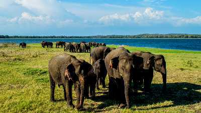
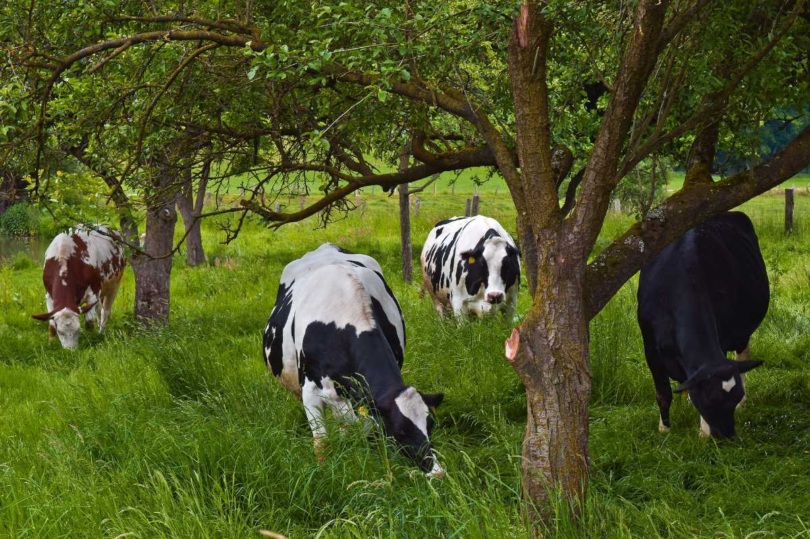

Moon Plains
Moon Plains, also known as Sandathanne, was recently opened to the public in 2014 and has readily become one of the most loved biodiversity spots for travelers. Earlier it used to be a garbage dump area which has now been converted into a park. Moon Plains is situated 6 km away from the main city of Nuwara Eliya.
During the visit to Nuwara Eliya, one can notice slanting plains, majestic against the backdrop of hills from the Central Highlands. Blanketed in lush green with mountain peaks all-round, one can view this country all at once from Moon Plains. Also known as Mini World’s end or the second World’s End, one can get a 360 degree view of the nine peaks - some of them being Kirigalpoththa, the Great Western Mountain, Kikiliyamana Mountain, Thotupola Mountain, Konical Hill Mountain, Single Tree Mountain - among which the highest peak Pidurutalagala is clearly visible from Moon Plains. As no personal vehicles are allowed, one can rent jeeps to reach to the top. Safari rides, close proximity to nature,
diverse flora and fauna in the Moon Plains are some of the few highlights of visiting Moon Plains in Sri Lanka

Hakgala Gardens
The Hakgala Botanical Garden is the second largest botanical garden in Sri Lanka. It is a part of the Hakgala Strict Nature Reserve and was established in 1861. It has a wide variety of plants and some exotic animal species with the entire garden divided into different sections, dedicated to different plant species, like ferns, cacti, orchids, etc. It is situated on the Badulla Highway and is about 5 kilometres away from the city of Nuwara Eliya. It is said that the Hakgala Gardens was in fact, 'Ashok Vatika'', from the Hindu epic 'The Ramayana''. Since these gardens are on an elevated ground, the climate mostly ranges from cool to moderately hot.
The Hakgala Botanical Garden is the second largest, and one of the few famous botanical gardens in Sri Lanka. It was established in 1861 by Dr G.H.K. Thwaites, for experimenting with the growth of Cinchona. The garden has different sections, where each part hosts a particular plant species. The garden forms brilliant biodiversity, where exotic birds and animals coexist with the rare plants grown there. The average temperature of the garden ranges from 16°C to 30°C, making it cold to moderately hot throughout the year.
The Hakgala Botanical Garden is on the Peradeniya-Badulla-Chenkaladi Highway, near the famous Seetha Amman Temple. It has a lot of historical significance since the Hindus believe that this was where King Ravana had his famous pleasure garden - The Ashok Vatika. The garden takes about two hours to explore and provides the facility of moving around in a golf cart. It has various exotic plant species, and some rare wildlife, hence creating beautiful biodiversity within itself. It is one of the many places in Sri Lanka, that is closely associated with the Ramayana. So whether you want to get a taste of the Hindu culture, or you want to experience being one with nature, the Hakgala Gardens are a must-visit.

Horton Plains National Park
Horton Plains National Park is a UNESCO World Heritage Site, situated at an altitude 2,100–2,300 metres and located in Central Sri Lanka. It is a government protected area which is surrounded by massive cloudy forests and never-ending grasslands. Horton Plains National Park is a popular destination to visit the famed ‘World’s End Cliff’, a long, steep plunge of 880m where the plateau comes to a dramatic stop.
The protected area was made into a national park around the year 1988 and since then has been luring a significant number of people towards its grandiose. Horton Plains is also the meeting point of three prime Sri Lankan rivers, and those are Mahaweli, Kelani, and Walawe. The national park is home to many woody plants and of Sri Lankan Sambar Deers.
The endemic species is a highlight of the park including the bird area which comprises of many endangered species of birds. Thus, Horton Plains is a delight to the eyes and a visit to this incredible region will not only soothe one’s mind and body but also will lead to a fun trip within the mountains of green!

AmbewelaFarm
The farm, also known as New Zealand farm, is a hub of organic countryside activities in the pristine landscape of Ambewela hill station. The lush green fields, rugged mountains, and the bright blue sky gives Ambewela the title of 'Little New Zealand'. The drive is a pleasant one, with scenic views of vegetable farms, lakes and forests. A famous attraction in this area is World's End, which is a cliff with an immense depth of more than 1200 metres. This thrilling spot is often used by visitors to click pictures.
Ambewela is a pristine hill station located in Nuwara Eliya district in Central Province, Sri Lanka. The farm is located at a distance of 20 km from Nuwara Eliya and encompasses a 1500 acre area. Ambewela farm also owns a cafeteria, which specializes in dairy products, organically made in the farm. The milkshakes in the cafeteria are a beloved of the locals as well as the tourists. The weather is always pleasant in and around the farm. The temperature ranges between 9°C to 23°C, with an average of 17.5°C. The misty weather adds to the beauty of this place, by creating a divine landscape, absolutely untouched and undisturbed.
Families, especially those with children, most often visit Ambewela farms. The mountains, farms and animals make for an ideal family excursion and weekend getaway. Also, children get the opportunity to learn about animal husbandry, farming and the lifestyle in the countryside. Visit this slice of heaven for a peaceful and feel-good experience.

Lovers leap
The Lover's Leap is a beautiful waterfall nestled amongst the tea plantation hills. Tourists can visit this place when they visit the Pedro Tea Estate since the waterfalls are nearby. The waterfall has many myths and stories associated with it, which makes it even more exciting and attractive. Tourists have to hike up the hill to get to the waterfalls which are one of the lesser-known and lesser-visited tourist spots in Nuwara Eliya, so tourists can leisurely explore the place. It is about 3.5 kilometres away from the central city and easily accessible via local transport.
One can explore and hike up these beautiful hills and discover a hidden waterfall. The area near the Pedro Tea Estate has this seemingly mystical waterfalls, called the Lover's Leap. There are various stories as to how this waterfall got its name, and all of them make the place even more intriguing. Towards the end of the hike, the view of the waterfall, and the view of the entire city from the top of the hill are guaranteed to make you swoon. The trek may get tough, but it is worth it.
It is recommended that you visit these waterfalls during the wet season to see them in their full glory. It is easy to find the waterfalls since there are directions marked on the way. You will come across a shrine of Lord Shiva on your way as well. Tourists generally prefer visiting this waterfall in the afternoon, after paying a visit to the Tea Estate. A bit of hard work and challenging climbing can take you to the best viewing point of the city.

Town walk
A walking tour of Nuwara Eliya involves scenic views of Sri Lanka's forested hills. One can take a stroll around the tea plantations and visit the many different sightseeing places around. It is known as 'Little England', and has old buildings with colonial and Tudor architecture, making it a pleasurable place for walking around. The town also has many historical sites and temples, that are very valuable to different cultures. This town is the perfect place walka relax, rewind, and get a taste of different cultures, spanning between a few kilometres.
A mix of Sri Lankan and colonial architecture gives the city a picturesque appearance and the weather is most conducive so it feels great to soak in the ambience strolling around the town.